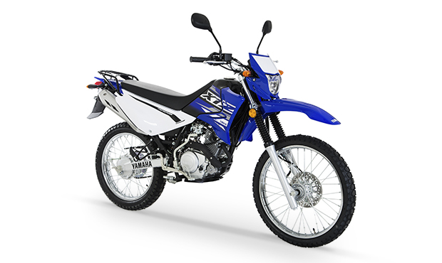

La YAMAHA YBR 125G nace como una motocicleta doble propósito con la capacidad de recorrer caminos asfálticos y de terracería. Se incorporan a esta motocicleta elementos de mejor funcionamiento en aceleración, estabilidad y diseño.
XTZ125E

La XTZ 125, es una motocicleta doble propósito con el diseño y confort que sólo puede entregarte una moto de verdad, tiene encendido eléctrico para una mayor comodidad. Sus gráficos y colores la hacen más atractiva. Con motor 4 tiempos, balanceador de cigüeñal, el cual evita vibraciones en el motor y SOHC que genera menor ruido y es más eficiente. Suspensión trasera monocross para mayor confort en todo terreno.
Super Tenere 1200 ZE
Dentro de cada uno hay un espíritu aventurero esperando a ser liberado. Cuando la necesidad de salir de la rutina se hace irresistible, esta motocicleta de alta tecnología está siempre lista para llevarte a cualquier lugar.
Todos los aspectos de este modelo de aventura se ha diseñado para llevarte más allá de donde alcanza tu imaginación. Con un potente motor de 1199 cc y un robusto chasis con suspensión ajustable electrónicamente, la Super Ténéré está lista para emocionarte al máximo tanto en autovía como en un revirado sendero.